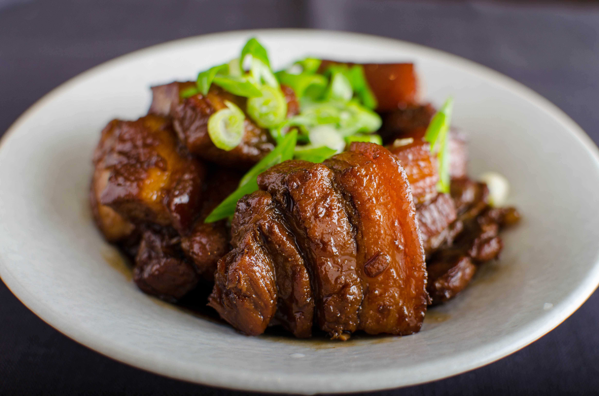

Buta no kakuni: Japanese Braised Pork Belly
Ingredients:
500g pork belly
1 star anise
50ml soy sauce
300ml water
1 piece ginger, sliced
Serves: 6-10
Prep time: 10 min
Cook time: 3 h 10 min
Total time: 3 h 20 min
Method:
- Cut the pork into cubes about 1 inch / 2cm or so square. If the skin is still on, leave it on. Heat up a large pot with a heavy bottom. Sauté the pork belly cubes, without any added fat (you don't need it...) until browned.
- When the meat is browned, scrape it to one side and put the sugar in the fat that's accumulated on the bottom, and stir around until it's a bit caramelized. Stir and toss so the meat gets coated by the sugar.
- Add the rest of the ingredients, bring to a simmer and lower the heat. Put a lid on and let it simmer gently for about 3 hours, turning occasionally.
- To serve, dredge the pieces carefully out of the very oily cooking liquid, and peel of the thick layer of fat that's on the skin side of the meat. Drizzle a little bit of the cooking liquid over the cubes.
Or you could have these other recipes...
Yummy other recipe!
A different but equally yummy recipe, I promise! It still (obvs) includes pork belly, since it is the food of Gods....
Not so yummy other recipe :(
This recipe only serves one, and has a lot less meat, but if that floats your boat...
That weird recipe your grandma gave you!
Perhaps you're feeling brave, or think it's respectful to serve such a dish; or maybe you're drunk. You're probably drunk...